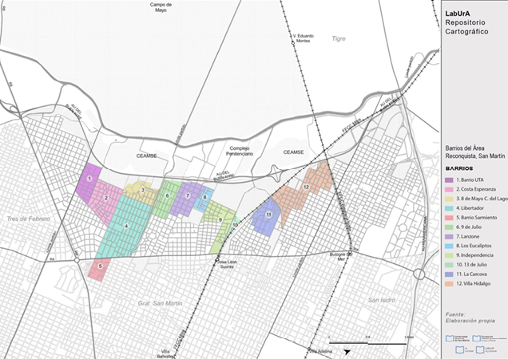
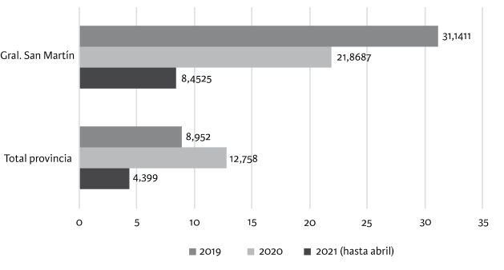
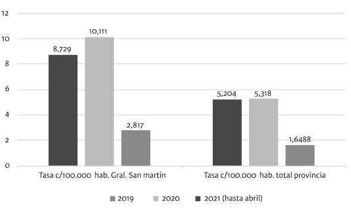
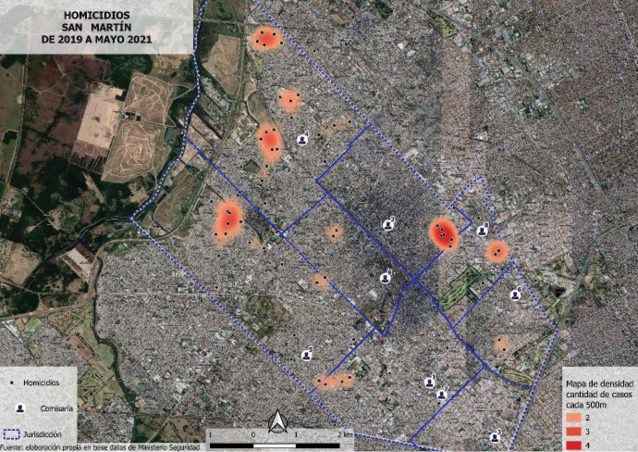
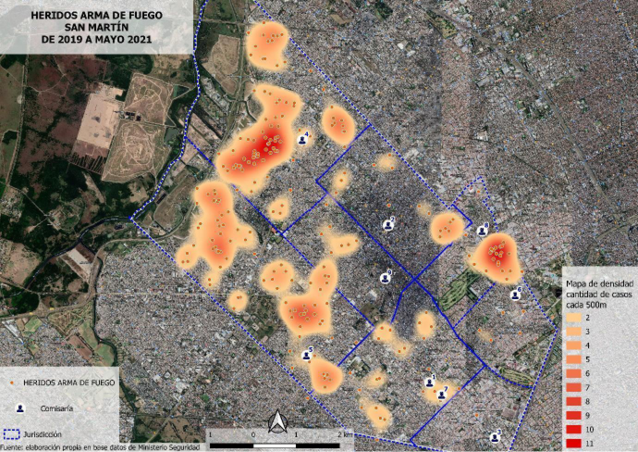
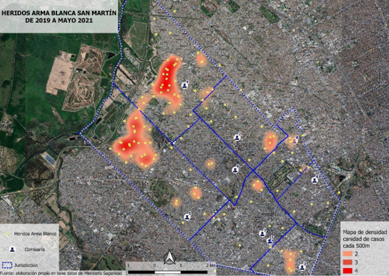
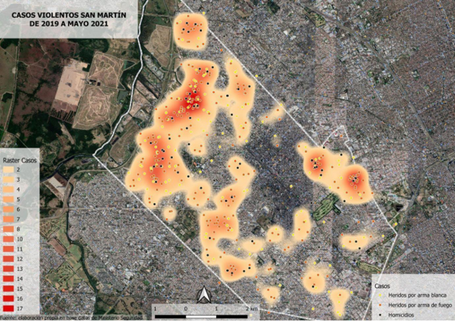

Evangelina Caravaca, José Garriga Zucal e Inés Mancini
Estamos ante un rompecabezas incompleto. Aquí, proponemos encastrar algunas piezas que nos permiten conocer una porción de nuestra sociedad. Las piezas que presentamos en este libro iluminan fragmentos del partido de Gral San Martín, al mismo tiempo que dan pistas para comprender las violencias entre los sectores más vulnerables de nuestra sociedad. Nos interesa pensar qué pasó en el partido de San Martín entre los actores más vulnerados (vulnerabilizados)1 durante la pandemia. El lente de nuestras investigaciones hace zoom en dos especificidades. Primero, sobre el Área Reconquista, una de las más golpeadas –abolladas– del partido. El área –sobre la que volveremos en estas palabras introductorias– está ubicada en el fondo del partido, en los límites con el río Reconquista. Son los últimos vecinos; últimos geográficamente y también, socialmente. Nos interesa pensar en estos últimos y abollados para reflexionar qué pasó con la pandemia.
La UNSAM, anclada y atada al devenir histórico de su territorio, contribuye de formas diferentes al conocimiento del área en la cual está emplazada. Y en sintonía con esto, desde 2015 el Núcleo de Estudios sobre Violencias (NEV) focaliza sus análisis mayoritariamente en la territorialidad del partido de San Martín. Desde su inicio, las líneas de investigación del NEV han recorridos los estudios sobre violencias, los análisis de la inseguridad, la prevención del delito, el activismo y movilización de víctimas, la regulación de la conflictividad, entre otros. En este marco, un interrogante organiza la investigación de nuestro equipo desde hace varios años: ¿Cómo se vinculan diferentes manifestaciones de la violencia y la vulnerabilidad en la Argentina? Y, en este libro, la relación entre violencias y vulnerabilidad se complementan con una pregunta por la pandemia: ¿qué sucedió en términos de violencias y vulnerabilidades con el COVID-19 por estos lares?
Esta publicación aborda las experiencias de habitantes y trabajadores de San Martín, en especial del Área Reconquista en relación a los efectos de la pandemia COVID-19, en general. Y, en particular, la investigación nos convocó a pensar tanto en las transformaciones como en las continuidades que la pandemia produjo en la relación entre la segregación espacial y las violencias. Los interrogantes que guían este volumen están vinculados a una investigación financiada por la Agencia Nacional de Promoción de la Investigación, el Desarrollo Tecnológico y la Innovación.2 En este libro, entonces, ponemos en juego los resultados de este trabajo colectivo para reflexionar sobre las relaciones entre violencias y vulnerabilidad, preguntándonos qué cambió y qué no lo lo hizo con la pandemia COVID-19.
El Área Reconquista es un conglomerado urbano ubicado en la localidad de Gral San Martín, compuesto por un conjunto de barrios3 linderos al río Reconquista; de allí el nombre que lo identifica. Acorde a los últimos datos censales disponibles,4 la población del área alcanzaba un total de 66.015 habitantes, lo que representa aproximadamente el 16% de la población dentro del partido de San Martín, el cual –según datos censales disponibles– cuenta con 414.196 habitantes, aproximadamente. A continuación, pondremos en relación algunos datos sociodemográficos disponibles del Área Reconquista con aquellos que refieren a la ciudad de San Martín. De este modo, intentamos dar cuenta de un panorama de las vulnerabilidades propias de este espacio (Mapa 1).
Mapa 1. Barrios que integran el Área en el partido de San Martín, provincia de Buenos Aires

Fuente: elaborado por el LabUrA de la UNSAM
Según datos disponibles del INDEC,5 en la ciudad de San Martín el 6,7% de los hogares presenta Necesidades Básicas Insatisfechas (NBI), pero si nos enfocamos especialmente en los barrios que integran el AR se supera ampliamente ese promedio –de hecho, triplica ese número–, lo que da cuenta de que la mayoría de sus habitantes vive en situación de extrema pobreza (INDEC, 2010). Específicamente, los datos estadísticos disponibles nos permiten reconocer que, en once de los trece barrios, entre el 10% y el 26% de los hogares tiene NBI. Pero, en particular, en el Barrio 13 de julio ese número alcanza a un 60% de sus habitantes. Con todo, es posible afirmar que el Área Reconquista, en su diversidad, se encuentra signada por el hacinamiento, el déficit estructural, el aislamiento urbano, el riesgo ambiental y otras características que degradan la calidad de vida de sus vecinos. Entonces, el área se destaca como un espacio social y urbano privilegiado para la investigación social sobre violencias y vulnerabilidad.
Para dar cuenta de las condiciones de vulnerabilidad del área, es importante mencionar que solo el 53,48% de los hogares de la localidad de San Martín poseían red de desagüe cloacal (INDEC, 2010), a pesar de pertenecer a la primera corona de la región metropolitana. El área Reconquista de San Martín es una de la menos servidas y, en los barrios, la mayoría se encuentra por debajo del 3%, con la excepción del barrio Sarmiento, con el 44% de los hogares conectados a la red, seguramente beneficiado por la particularidad de su entorno con un alto nivel de consolidación. Por otro lado, en el partido de Gral. San Martín, el 3% de los hogares presenta hacinamiento, esto es, más de tres personas por cuarto (INDEC, 2010). En los barrios estudiados, se supera el promedio del partido, con algunos, como 13 de Julio, con un 28%, y 8 de Mayo y Costa del Lago, con el 16% de los hogares con hacinamiento. En todos los barrios, los porcentajes son de los más altos del Gran Buenos Aires. Finalmente, es importante dar cuenta de que la mayoría se encuentran en un nivel medio alto de riesgo ambiental, donde agua, suelo y aire presentan indicadores de contaminación, con directas afectaciones a la salud.
Para analizar las violencias en el Área Reconquista, nos valemos de dos tipos de datos diferentes. Por un lado, abordaremos datos estadísticos con el objetivo de analizar cómo las violencias se concentran en esta área. Para ello, mostraremos cómo se distribuye desigualmente la tasa de homicidio, de heridos por arma de fuego y heridos por arma blanca. Por otro lado, analizaremos los datos del trabajo de campo realizado durante el 2021 en esta zona para dar cuenta de cómo los vecinos y policías interpretan las formas de la violencia y sus posibles modificaciones durante la pandemia.
Entonces, comenzaremos por el análisis de los datos cuantitativos. Según el Sistema Nacional de Información Criminal (SNIC), los hechos de violencia potencialmente letales que no llegan a tener consecuencias mortales –por ejemplo, los heridos por armas de fuego– aumentaron de manera significativa en toda la provincia de Buenos Aires entre 2019 y 2020. En efecto, en 2019, hubo 1555 casos, lo que arroja una tasa de 8,95 por cada cien mil habitantes. En 2020 hubo 2238 casos; es decir, una tasa de 12,75 por cada cien mil habitantes. Mientras tanto, en San Martín, la cantidad de heridos con armas de fuego disminuyó en ese mismo período. En 2019 hubo 132 (lo que arroja una tasa cada 100.000 habitantes de 31,14) y en 2020 hubo 92 (21,86 de tasa cada 100.000). Pero, como se ilustra, la tasa de heridos de arma de fuego resulta ser más alta en San Martín que a nivel provincial (pcia. de Buenos Aires) (GRÁFICO 1).
Gráfico 1. Heridos de arma de fuego. Total provincia de Buenos Aires y Gral. San Martín (tasa cada 100.000 habitantes)

Fuente: elaborado por Gabriel Rivas en el marco de esta investigación con datos provistos por el Ministerio de Seguridad de la Provincia de Buenos Aires.
Por otro lado, en el caso de los homicidios dolosos, los datos resultan ser diferentes. Mientras que en toda la provincia de Buenos Aires los homicidios permanecieron estables entre 2019 y 2020, en Gral. San Martín subieron y de forma muy significativa. A nivel provincial, la variación de la tasa cada 100.000 habitantes fue de 5,2 a 5,3. En cambio, en el partido de Gral. San Martín en 2019 murieron 37 personas en homicidios dolosos y 43 en 2020. La tasa de homicidios dolosos aumentó de esta forma un 16% (gráfico 2).
Gráfico 2. Homicidios dolosos. Total provincia de Buenos Aires y Gral. San Martín

Fuente: elaborado por Gabriel Rivas en el marco de esta investigación con datos provistos por el Ministerio de Seguridad de la Provincia de Buenos Aires.
Según los datos que hemos podido analizar, de las 37 víctimas de homicidios dolosos en General San Martín en 2019, siete de ellas eran mujeres. Particularmente, tres de ellas murieron asesinadas en casos de femicidio; dos, presumiblemente, en casos de enfrentamientos entre bandas delictivas; y otras dos, por balas perdidas en situaciones de enfrentamiento indeterminadas. Durante el mismo año, fallecieron seis varones en homicidios en ocasión de robo. Uno de ellos, víctima del robo de su automóvil, y, otro, cuando quiso interferir en el robo que sufría una vecina. Los otros cuatro asesinados en ocasión de robo son los denominados delincuentes u ofensores (aparecen, a veces, en las estadísticas policiales denominados como caco6 muerto), tres de ellos asesinados por miembros de las fuerzas de seguridad que intervinieron ante el supuesto delito. El resto de los homicidios dolosos de varones de 2019 (24) son “homicidios simples”, enmarcados en dos grandes rubros: “conflictos interpersonales” y “disputas territoriales”.
En el caso específico de los 43 homicidios dolosos ocurridos durante el 2020, fallecieron cuarenta hombres y tres mujeres. Dos de ellas fueron asesinadas por sus parejas o ex parejas en casos de femicidio. La tercera murió junto a dos varones en una balacera que dejó múltiples heridos y que obligó a una intervención policial en el barrio Loyola cercano al Área Reconquista. En cuanto a los homicidios en ocasión de robo, en 2020 se registran dos casos: en ambos episodios fallece el “ofensor”. El resto de los hechos (38) son homicidios simples y repiten las tipologías del 2019. Es decir, en los dos últimos años se registra un bajo porcentaje de homicidio en ocasión de robo y resulta ser mucho más frecuente el asesinato entre personas que se conocen: femicidios, riñas entre vecinos, enfrentamiento entre “bandas”.
Quizás, el dato más revelador en términos sociológicos se vuelve visible al analizar la distribución espacial de los hechos. El segundo mapa que se presenta muestra con claridad cómo los homicidios se distribuyen, casi en su totalidad, en las zonas más vulnerables del partido de Gral. San Martín. Especialmente en el área Reconquista, ubicada a la izquierda del mapa. La jurisdicción de las comisarías, 4a y 5a, intervienen en los barrios del Área Reconquista. Junto con la que corresponde a la zona del “Barrio Loyola”, comisaría 8a, condensan más del 90% de los homicidios ocurridos en el partido de Gral. San Martín (MAPA 2).
Mapa 2. Homicidios según ubicación geográfica. Partido de General San Martín (2019-mayo 2021)

Fuente: elaborado por Gabriel Rivas en el marco de esta investigación con datos provistos por el Ministerio de Seguridad de la Provincia de Buenos Aires.
Si prestamos atención a la distribución de los heridos por arma de fuego, observamos un comportamiento similar; de hecho, resulta más notorio que estas tengan lugar, principalmente, en los barrios vulnerables. Las tres grandes manchas de la izquierda, ubicadas también en el Área Reconquista, evidencian nuevamente una distribución desigual de las violencias (MAPA 3).
Mapa 3. Heridos por arma de fuego según ubicación geográfica. Partido de General San Martín (2019-mayo 2021)

Fuente: elaborado por Gabriel Rivas en el marco de esta investigación con datos provistos por el Ministerio de Seguridad de la Provincia de Buenos Aires.
En igual sentido, la distribución espacial de los heridos por armas blancas repiten los parámetros previamente mencionados (MAPA 4).
Mapa 4. Heridos por arma blanca según ubicación geográfica. Partido de General San Martín (2019-mayo 2021)

Fuente: elaborado por Gabriel Rivas en el marco de esta investigación con datos provistos por el Ministerio de Seguridad de la Provincia de Buenos Aires.
El análisis de estos datos, junto con su visualización espacial, nos permite sostener que, en la ciudad de Gral. San Martín, mueren y sufren las violencias de manera mayoritaria los vecinos de las áreas vulnerables. En una misma línea, al observar los hechos de violencia física potencialmente letales o letales, se identifica cierta concentración en áreas vulnerables (MAPA 5).
Mapa 5. Hechos de violencia física potencialmente letal/letal según ubicación geográfica. Partido de General San Martín (2019-mayo 2021)

Fuente: elaborado por Gabriel Rivas en el marco de esta investigación con datos provistos por el Ministerio de Seguridad de la Provincia de Buenos Aires.
Entonces, el análisis de los datos cuantitativos nos permite afirmar que, antes y después del inicio de la pandemia, las violencias se concentraron en las áreas vulnerables. Es decir, durante la situación de aislamiento a partir de la pandemia COVID-19, se verificó un incremento de la cantidad de homicidios, pero se observa también una continuidad respecto de la concentración de las violencias. Esta desigual distribución nos conduce a reflexionar acerca de la acumulación de las violencias en las áreas vulnerables.7
En 2021, realizamos una investigación colectiva en el Área Reconquista que contempló la realización de sesenta entrevistas en profundidad a vecinos, funcionarios y agentes policiales que trabajan cotidianamente en el territorio en cuestión. En paralelo al trabajo de campo, se realizó un relevamiento y análisis de medios (locales y nacionales) producto del cual se organizó un corpus de noticias sobre violencias y trabajo policial, entre otros. Junto a estas tareas de investigación, se trabajó con el análisis de datos cuantitativos a través de los cuales pudimos complejizar la forma de abordar el objeto. La propuesta fue, entonces, triangular datos (cualitativos y cuantitativos) y buscar con ello un acercamiento integral al fenómeno de las violencias y la vulnerabilidad en el área en cuestión.
El trabajo de campo se realizó entre los meses de febrero y agosto de 2021. El equipo de entrevistadores estuvo compuesto por integrantes del Núcleo de Estudios sobre Violencias de la Escuela Interdisciplinaria IDAES. Estudiantes de las carreras de Sociología y Antropología Social, junto con tesistas e investigadores del núcleo, conformaron un equipo de trabajo que logró sortear las dificultades propias de un abordaje cualitativo en contexto de pandemia. Junto a ellos, se sumó un equipo de análisis y desgrabación de entrevistas.
En relación con el perfil de los entrevistados, se contempló la paridad entre hombres y mujeres. Se trata de entrevistados con una rango de edad que va desde los 18 hasta los 60 años y despliegan distintos roles (educativos, comunitarios, comerciales, entre otros). Por otro lado, entre los entrevistados funcionarios, hubo una selección de áreas municipales (Secretarías de Seguridad, Desarrollo Social) y policiales (por ejemplo, altos mandos policiales que han tomado decisiones de gestión en el marco de la pandemia). Por una decisión ético-metodológica, no usaremos los nombres oficiales de estos barrios en el análisis de las entrevistas para preservar el anonimato de nuestros entrevistados. Asimismo, en varios de los artículos de este volumen hemos optado por no usar seudónimos, sino solamente la mención al entrevistado/a. En otros, por la forma en que hemos abordado el análisis, decidimos usar seudónimos.
El libro y la investigación son el resultado de un denso trabajo colectivo entre colegas, entrevistados y militantes. Algunas especificidades serán aquí homogeneizadas en la representación de un todos masculino inexistente. Sabiéndola imperfecta e incompleta, tomamos esta decisión como criterio de estandarización de un libro con muchas voces.
En relación con la organización, hemos distribuido los capítulos en cuatro secciones que agrupan los ejes centrales de nuestra investigación. Aun así, todos los artículos del libro dialogan y remiten a las preguntas de investigación compartidas. Cada sección, además, es acompañada por una fotografía que oficia de portada. Estas fueron tomadas en el contexto de la pandemia en distintos barrios del área en el marco de un proyecto de investigación del NEV junto a organizaciones territoriales.8
En primer lugar, una sección que cuenta con dos trabajos que problematizan los roles y actores comunitarios en contexto de pandemia y vulnerabilidad. El trabajo de Mancini, Caravaca y González Plaza problematiza los actores, espacios y roles comunitarios frente a las violencias en pandemia. En la misma sección, el texto de Ana Berardo analiza el rol e impacto de los “transas” en el territorio.
En segundo lugar, presentamos una sección sobre fuerzas de seguridad y violencias que cuenta con dos aportes: por un lado, un texto de José Garriga Zucal y Federico del Castillo donde se abordan las relaciones entre policías y vecinos en el área en contexto de pandemia. También, otro artículo de Joaquin Zajac y José Garriga Zucal que analiza el despliegue de la fuerza UTOI en los territorios analizados.
En tercer lugar, la sección sobre género, violencias y vulnerabilidad cuenta con tres trabajos sobre distintas aristas del fenómeno. El capítulo de Dikenstein, Gonzalez Campana y Echagüe aborda las percepciones y la gestión en torno a la circulación local de la violencia de género en contexto de pandemia. Por otro lado, el trabajo de Romina Rajoy aporta a una reflexión sobre el cruce de los mecanismos de la violencia machista en tiempos de confinamiento. Finalmente, Marin Di Marco analiza el recrudecimiento de la violencia de género durante la pandemia.
La cuarta y última sección del libro cuenta con artículos que analizan la dimensión de medios y noticias locales en relación con las violencias. Por un lado, el artículo de Focás y Rodríguez Moglia analiza violencias y noticias locales en pandemia. Por último, el artículo de Recanatti, Ferradás y Maldonado Zabala profundiza en las prácticas periodísticas y noticias policiales en el Partido de San Martín.
Para finalizar, queremos señalar que entendemos este libro como un rompecabezas incompleto que busca aportar a un campo de estudios sobre las violencias y vulnerabilidades en áreas segregadas. Sabiendo que la imagen completa es inalcanzable, queremos reponer algunas piezas que permitan recuperar las voces de algunos de los últimos y abollados, al mismo tiempo que pretendemos seguir aportando a este campo de estudios y, si es posible, abrir nuevas preguntas.
1. Sucintamente, diremos que la vulnerabilidad es una condición producto del resultado de la desigual distribución de recursos económicos y simbólicos. No existen, entonces, actores vulnerables per se; existen actores que son vulnerables por las condiciones sociales que los condicionan.
2. Proyecto PISAC-Covid “Fuerzas de seguridad, vulnerabilidad y violencias. Un estudio interdisciplinario, multidimensional y comparativo de las formas de intervención de la fuerzas de seguridad y policías en contextos de vulnerabilidad en la Argentina post pandemia” (2021-2022).
3. Los barrios que integran el Área Reconquista son los siguientes: Barrio UTA, Lanzone, Villa Hidalgo, La Cárcova, Independencia, Libertador, 9 de julio, Sarmiento, Costa Esperanza, 8 de Mayo, Costa del Lago, 13 de Julio y Los Eucaliptos.
4. Los datos disponibles corresponden al Censo Nacional de Población de 2010.
5. Instituto Nacional de Estadística y Censos (INDEC), Argentina.
6. Caco: término popular que es usado para describir despectivamente a ladrones.
7. Estos datos fueron analizados también en “‘Sobre llovido, mojado’. Pandemia y violencias en poblaciones vulnerables en el Área Reconquista (provincia de Buenos Aires)”. Este artículo se encuentra en prensa en la Revista Acta Sociológica al momento de editar esta publicación.
8. Proyecto de investigación: “Violencia institucional:Ampliando el campo de batalla”. FACTOR-IDAES. Disponible en: http://unsam.edu.ar/escuelas/idaes/violenciainstitucional/